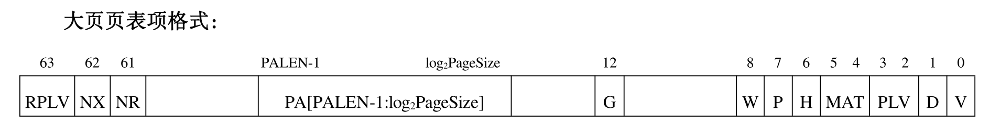
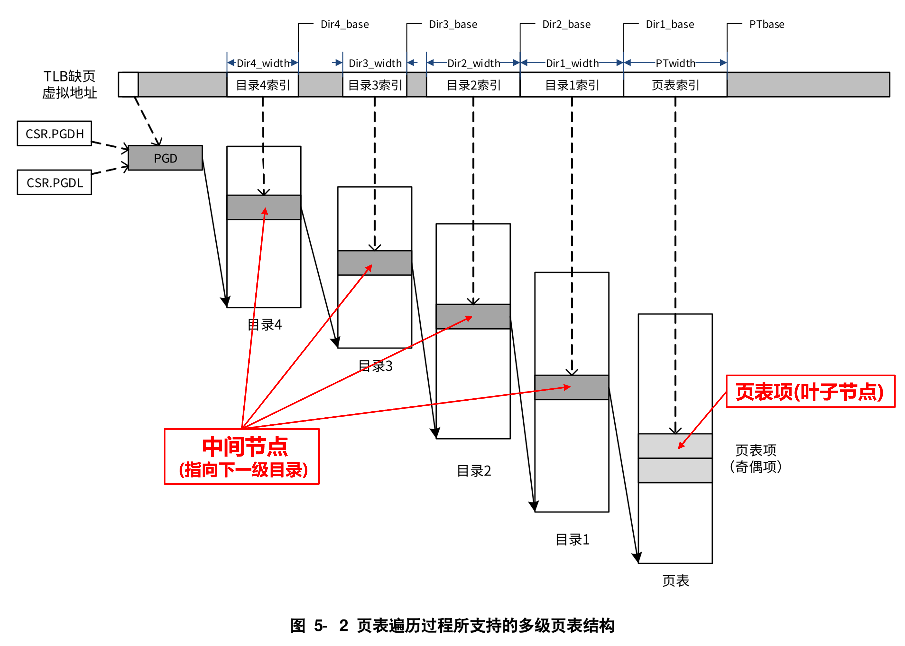
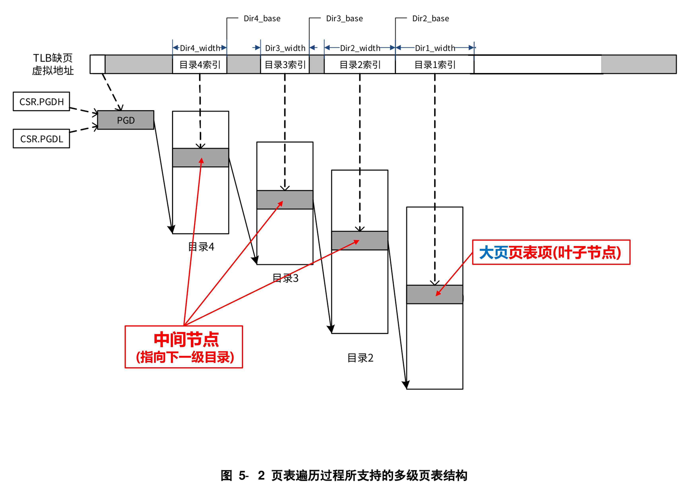

4.5. 多级页表结构
多级页表（Multi-level Page Table）是现代操作系统内存管理的核心机制，通过分层结构解决单级页表的内存占用过高问题，同时兼顾地址转换效率。以下是其核心原理与实现细节：
4.5.1. 设计背景与必要性
单级页表的缺陷
内存爆炸：64位系统下，单级页表需存储
2^52个页表项（假设页大小4KB），总内存需求达4PB，远超物理内存容量。连续存储限制：单级页表必须连续存放，无法动态分配，导致内存碎片化问题严重。
多级页表的核心思想
分层索引：将虚拟地址拆分为多段，逐级映射到物理地址，减少单层表项数量。
按需分配：仅当虚拟地址被访问时，才创建对应的下级页表，显著降低内存占用。
4.5.1.1. 多级页表的结构与层级
以 LoongArch64的四级页表为例（4KB页），虚拟地址拆分为以下部分：
这也是Linux中的常规使用。
48位虚拟地址 → PGD（9位） + PUD（9位） + PMD（9位） + PT（9位） + 页内偏移（12位）
PGD（Page Global Directory）：全局页目录，每个进程独立，存储PUD基地址。
PUD（Page Upper Directory）：上级页目录，指向PMD。
PMD（Page Middle Directory）：中级页目录，指向PT。
PT（Page Table）：最终映射到物理页框（PPN）。
其他架构示例：
ARMv8：支持4级页表（L0~L3），可动态切换为3级或2级以适配不同颗粒度（如1GB大页）。
Linux通用实现：抽象为PGD→PUD→PMD→PTE四级，兼容不同CPU架构。
4.5.1.2. 地址转换流程
以LoongArch64为例，虚拟地址转换步骤如下：
步骤1： TLB命中检查：CPU优先查询转换快表（TLB），若命中则直接返回物理地址。
步骤2： 逐级页表遍历：
步骤1：从CR3寄存器获取PGD基地址，用PGD索引找到PUD表项。
步骤2：从PUD表项获取PMD基地址，用PUD索引找到PMD表项。
步骤3：从PMD表项获取PT基地址，用PT索引找到PTE。
步骤4：从PTE提取物理页号（PPN），与页内偏移拼接为物理地址。
步骤3： 缺页处理：若某级页表项不存在（如PTE未分配），触发缺页中断，由内核分配内存并更新页表。
4.5.1.3. 多级页表的优势
内存效率提升
仅分配实际使用的页表层级。例如，若进程仅使用100个虚拟页，四级页表总占用约16KB（而非单级页表的4PB）。
灵活性与扩展性
支持大页（如2MB/1GB），通过设置PS（Page Size）位减少页表层级。
适配不同架构（如ARM的Stage1/Stage2地址转换）。
隔离与安全
每个进程独立维护页表，确保地址空间隔离。
通过权限位（R/W、U/S、X）控制内存访问。
4.5.1.4. 优化机制
TLB（Translation Lookaside Buffer）
缓存最近访问的页表项，减少多级页表遍历次数。TLB命中率可达90%以上，显著提升性能。
反向页表（Inverted Page Table）
以物理页框号为索引，记录占用该页的进程和虚拟页号。适用于物理内存较小的场景，但地址转换复杂度高。
巨型页（Huge Pages）
跳过中间页表层级，直接映射大块内存。例如，2MB巨型页仅需1级页表项，减少TLB Miss。
4.5.1.5. 对比不同架构的页表设计
架构 |
页表层级 |
关键特性 |
|---|---|---|
x86-64 |
4级（PGD→PUD→PMD→PT） |
支持512GB虚拟地址空间，兼容PAE扩展。 |
ARMv8 |
4级（L0~L3） |
支持Stage1（虚拟地址到中间物理地址）和Stage2（中间到物理地址）转换。 |
RISC-V |
2~4级可配置 |
灵活适配不同内存需求，常见于嵌入式系统。 |
4.5.2. LoongArch的多级页表结构
龙架构的多级页表结构如下图所示：

上述图中的CSR中的PGDL，PGDH，PWCL，PWCH寄存器。下面是具体的位宽说明：
❖PWCH
| 位 | 名字 | 读写 | 描述 |
|---|---|---|---|
| 5:0 | Dir3_base | RW | 次高一级目录（第 3 级页表）的起始地址。 |
| 11:6 | Dir3_width | RW | 次高一级目录（第 3 级页表）的索引位数。0 表示没有这一级。 |
| 17:12 | Dir4_base | RW | 最高一级目录（第 4 级页表）的起始地址。 |
| 23:18 | Dir4_width | RW | 最高一级目录（第 4 级页表）的索引位数。0 表示没有这一级。 |
| 24 | 0 | 0 | 当实现不支持硬件页表遍历（CPUCFG.2.HPTW[bit24]=0）时，读返回 0，且软件 不允许改变其值。 |
| 24 | HPTW_En | RW | 当实现支持硬件页表遍历（CPUCFG.2.HPTW[bit24]=1）时，该位为硬件 页表遍历功能的使能位，置 1 开启，置 0 关闭。 |
| 31:25 | 0 | R0 | 保留域。读返回 0，且软件不允许改变其值。 |
❖PWCL：页表遍历控制低半部分，该寄存器和 CSR.PWCH 寄存器中的信息在一起定义了操作系统中所采用的页表结构。
这些信息将用于指示软件或硬件进行页表遍历
| 位 | 名字 | 读写 | 描述 |
|---|---|---|---|
| 4:0 | PTbase | RW | 末级页表（第 0 级页表）的起始地址。 |
| 9:5 | PTwidth | RW | 末级页表（第 0 级页表）的索引位数。 |
| 14:10 | Dir1_base | RW | 最低一级目录（第 1 级页表）的起始地址。 |
| 19:15 | Dir1_width | RW | 最低一级目录（第 1 级页表）的索引位数。0 表示没有这一级。 |
| 24:20 | Dir2_base | RW | 次低一级目录（第 2 级页表）的起始地址。 |
| 29:25 | Dir2_width | RW | 次低一级目录（第 2 级页表）的索引位数。0 表示没有这一级。 |
| 31:30 | PTEWidth | RW | 内存中每个页表项的位宽。 0 表示 64 比特，1 表示 128 比特，2 表示 256 比特，3 表示 512 比特。 |
❖PGD: 全局目录基址, 该寄存器是一个只读寄存器，其内容是当前上下文中出错虚地址所对应的全局目录基址信息。该寄存
器的只读信息，不仅用于 CSR 类指令的读返回值，也用于 LDDIR 指令访问全局目录时所需的基址信息。
| 位 | 名字 | 读写 | 描述 |
|---|---|---|---|
| 11:0 | 0 | R | 只读恒为 0，写被忽略。 |
| GRLEN-1:12 | Base | R | 如果当前上下文中出错虚地址的最高位是 0，读返回值等于 CSR.PGDL 的 Base 域； 否则，读返回值等于 CSR.PGDH 的 Base 域。 当 CSR.TLBRERA.IsTLBR=0 时，当前上下文中出错虚地址信息位于 CSR.BADV 中； 否则，出错虚地址信息位于 CSR.TLBRBADV 中。 |
❖PGDL：低半地址空间全局目录基址，该寄存器用于配置低半地址空间的全局目录的基址。要求全局目录的基址一定是4KB
边界地址对齐的，所以该寄存器的最低 12 位软件不可配置，只读恒为 0。
| 位 | 名字 | 读写 | 描述 |
|---|---|---|---|
| 11:0 | 0 | R | 只读恒为 0，写被忽略。 |
| GRLEN-1:12 | Base | RW | 低半地址空间的全局目录的基址。所谓低半地址空间是指虚地址的第[VALEN-1]位等于 0。 |
❖PGDH：高半地址空间全局目录基址，该寄存器用于配置高半地址空间的全局目录的基址。要求全局目录的基址一定是 4KB
边界地址对齐的，所以该寄存器的最低 12 位软件不可配置，只读恒为 0。
| 位 | 名字 | 读写 | 描述 |
|---|---|---|---|
| 11:0 | 0 | R | 只读恒为 0，写被忽略。 |
| GRLEN-1:12 | Base | RW | 高半地址空间的全局目录的基址。所谓高半地址空间是指虚地址的第[VALEN-1]位等于 1。 |
4.5.2.1. Kernel如何初始化设置多级页表结构
根据上面的说明，内核要想正确的使用虚拟地址转换，需要正确的设置多级页表结构。不像RISC-V，页大小和虚拟地址的划分是确定的如下所示：
在Sv39的模式下，页大小4KB，此模式下虚拟地址只用了VA[38:0]
VPN[2] = VA[38:30]
VPN[1] = VA[29:21]
VPN[0] = VA[20:12]
Page Offset = VA[11:0]
在Sv48的模式下，页大小4KB，此模式下虚拟地址只用了VA[47:0]
VPN[3] = VA[47:39]
VPN[2] = VA[38:30]
VPN[1] = VA[29:21]
VPN[0] = VA[20:12]
Page Offset = VA[11:0]
而在LoongArch中，虚拟地址VPN的划分是比较灵活，示意图如上面所示。全是由PWCH、PWCL等寄存器中的域dir[x]_base、dir[x]_width和PT_Base确定。
备注
因此，在LoongArch中，通过给PWCL和PWCH状态控制寄存器设置合理的值，就能够使用多种页大小的多级分页机制！
下面我们会以例子的方式，说明如何设置CPU多级页表访问。
下面的举例都是以LoongArch64为例。内存中页表项的大小是64-Bit也就是8-Byte。
4.5.2.2. 二级页表，4KB页大小
页表偏移 Page_Offset = VA[11:0]
然后VPN[x]的大小为Log2(4KB/8B)= 9位，因此
VPN[1] = VA[29:21]
VPN[0] = VA[20:12]
Page Offset = VA[11:0]
这样的话虚拟地址只使用了VA[29:0]共30位，内存空间大小[0 - 1G]。
因此，PWCL和PWCH寄存器设置如下（可以是下面的配置）：
Dir4_base = 0
Dir4_width = 0
Dir3_base = 0
Dir3_width = 0
Dir2_base = 0
Dir2_width = 0
// VPN宽度9，起始地址为21
Dir1_base = 0x15（或者十进制21）
Dir1_width = 0x9 (十进制9)
// VPN宽度9，起始地址为12
PTbase = 0xc （或者十进制12）
PTwidth = 0x9 (十进制9)
// 页表表项64-bit
PTEWidth = 0
CSR.PWCH = 0x0， CSR.PWCL = 0x4d52c
或者是如下的配置也是可以的
Dir4_base = 0
Dir4_width = 0 //如果没有必须设置成0
// VPN宽度9，起始地址为21
Dir3_base = 0x15（或者十进制21）
Dir3_width = 0x9 (十进制9)
Dir2_base = 0
Dir2_width = 0 //如果没有必须设置成0
Dir1_base = 0
Dir1_width = 0 //如果没有必须设置成0
// VPN宽度9，起始地址为12
PTbase = 0xc （或者十进制12）
PTwidth = 0x9 (十进制9)
// 页表表项64-bit
PTEWidth = 0
CSR.PWCH = 0x255， CSR.PWCL = 0x12c
小技巧
上述只要保证只有两个Dir3_width, PTwidth或者Dir1_width, PTwidth有效即可！
还可以是其他的选项，只要保证起始位置和宽度正确满足规定。
4.5.2.3. 二级页表，16KB页大小
页表偏移 Page_Offset = VA[13:0]
然后VPN[x]的大小为Log2(16KB/8B)= 11位，因此
VPN[1] = VA[35:25]
VPN[0] = VA[24:14]
Page Offset = VA[13:0]
这样的话虚拟地址只使用了VA[35:0]共36位。
因此，PWCL和PWCH寄存器设置如下（可以是下面的配置）：
Dir4_base = 0
Dir4_width = 0
Dir3_base = 0
Dir3_width = 0
Dir2_base = 0
Dir2_width = 0
// VPN宽度11，起始地址为25
Dir1_base = 0x19（或者十进制25）
Dir1_width = 0xb (十进制11)
// VPN宽度11，起始地址为14
PTbase = 0xe （或者十进制14）
PTwidth = 0xb (十进制11)
// 页表表项64-bit
PTEWidth = 0
CSR.PWCH = 0x0， CSR.PWCL = 0x5e56e
或者是如下的配置也是可以的
Dir4_base = 0
Dir4_width = 0 //如果没有必须设置成0
// VPN宽度11，起始地址为25
Dir3_base = 0x19（或者十进制25）
Dir3_width = 0xb (十进制11)
Dir2_base = 0
Dir2_width = 0 //如果没有必须设置成0
Dir1_base = 0
Dir1_width = 0 //如果没有必须设置成0
// VPN宽度11，起始地址为14
PTbase = 0xe （或者十进制14）
PTwidth = 0xb (十进制11)
// 页表表项64-bit
PTEWidth = 0
CSR.PWCH = 0x2d9， CSR.PWCL = 0x16e
小技巧
上述只要保证只有两个Dir3_width, PTwidth或者Dir1_width, PTwidth
或者Dir2_width, PTwidth有效即可！
还可以是其他的选项，只要保证起始位置和宽度正确满足规定。
4.5.2.4. 三级页表，4KB页大小
页表偏移 Page_Offset = VA[11:0]
然后VPN[x]的大小为Log2(4KB/8B)= 9位，因此
VPN[2] = VA[38:30]
VPN[1] = VA[29:21]
VPN[0] = VA[20:12]
Page Offset = VA[11:0]
这样的话虚拟地址只使用了VA[38:0]共39位，内存空间大小[0 - 0xFFFFFFFFFF]。
因此，PWCL和PWCH寄存器设置如下（可以是下面的配置）：
Dir4_base = 0
Dir4_width = 0
Dir3_base = 0
Dir3_width = 0
// VPN宽度9，起始地址为30
Dir2_base = 0x1e
Dir2_width = 0x9
// VPN宽度9，起始地址为21
Dir1_base = 0x15（或者十进制21）
Dir1_width = 0x9 (十进制9)
// VPN宽度9，起始地址为12
PTbase = 0xc （或者十进制12）
PTwidth = 0x9 (十进制9)
// 页表表项64-bit
PTEWidth = 0
CSR.PWCH = 0x0， CSR.PWCL = 0x13e4d52c
或者是如下的配置也是可以的
Dir4_base = 0
Dir4_width = 0 //如果没有必须设置成0
// VPN宽度9，起始地址为30
Dir3_base = 0x1e
Dir3_width = 0x9
Dir2_base = 0
Dir2_width = 0 //如果没有必须设置成0
// VPN宽度9，起始地址为21
Dir1_base = 0x15（或者十进制21）
Dir1_width = 0x9 (十进制9)
// VPN宽度9，起始地址为12
PTbase = 0xc （或者十进制12）
PTwidth = 0x9 (十进制9)
// 页表表项64-bit
PTEWidth = 0
CSR.PWCH = 0x25e， CSR.PWCL = 0x4d52c
小技巧
上述只要保证只有两个Dir3_width, Dir1_width, PTwidth或者Dir2_width, Dir1_width, PTwidth有效即可！
还可以是其他的选项，只要保证起始位置和宽度正确满足规定。
4.5.2.5. 三级页表，16KB页大小
页表偏移 Page_Offset = VA[13:0]
然后VPN[x]的大小为Log2(16KB/8B)= 11位，因此
VPN[2] = VA[46:36]
VPN[1] = VA[35:25]
VPN[0] = VA[24:14]
Page Offset = VA[13:0]
这样的话虚拟地址只使用了VA[46:0]共47位。
因此，PWCL和PWCH寄存器设置如下（可以是下面的配置）：
Dir4_base = 0
Dir4_width = 0
Dir3_base = 0
Dir3_width = 0
// VPN宽度11，起始地址为36
Dir2_base = 024 (十进制36)
Dir2_width = 0xb (十进制11)
// VPN宽度11，起始地址为25
Dir1_base = 0x19 (或者十进制25)
Dir1_width = 0xb (十进制11)
// VPN宽度11，起始地址为14
PTbase = 0xe (或者十进制14)
PTwidth = 0xb (十进制11)
// 页表表项64-bit
PTEWidth = 0
CSR.PWCH = 0x0， CSR.PWCL = 0x1645e56e
或者是如下的配置也是可以的
Dir4_base = 0
Dir4_width = 0 //如果没有必须设置成0
// VPN宽度11，起始地址为36
Dir3_base = 0x24 (十进制36)
Dir3_width = 0xb (十进制11)
Dir2_base = 0
Dir2_width = 0 //如果没有必须设置成0
// VPN宽度11，起始地址为25
Dir1_base = 0x19 (或者十进制25)
Dir1_width = 0xb (十进制11)
// VPN宽度11，起始地址为14
PTbase = 0xe (或者十进制14)
PTwidth = 0xb (十进制11)
// 页表表项64-bit
PTEWidth = 0
CSR.PWCH = 0x2e4， CSR.PWCL = 0x5e56e
小技巧
上述只要保证只有两个Dir3_width, Dir1_width, PTwidth或者Dir2_width, Dir1_width, PTwidth
或者Dir3_width, Dir2_width, PTwidth有效即可！
还可以是其他的选项，只要保证起始位置和宽度正确满足规定。
4.5.2.6. 四级页表，4KB页大小
页表偏移 Page_Offset = VA[11:0]
然后VPN[x]的大小为Log2(4KB/8B)= 9位，因此
VPN[3] = VA[47:39]
VPN[2] = VA[38:30]
VPN[1] = VA[29:21]
VPN[0] = VA[20:12]
Page Offset = VA[11:0]
这样的话虚拟地址只使用了VA[47:0]共48位，内存空间大小[0 - 0x1FFFFFFFFFFFF]。
因此，PWCL和PWCH寄存器设置如下（可以是下面的配置）：
Dir4_base = 0
Dir4_width = 0
// VPN宽度9，起始地址为39
Dir3_base = 0x27 (或者十进制39)
Dir3_width = 0x9 (十进制9)
// VPN宽度9，起始地址为30
Dir2_base = 0x1e (或者十进制30)
Dir2_width = 0x9 (十进制9)
// VPN宽度9，起始地址为21
Dir1_base = 0x15 (或者十进制21)
Dir1_width = 0x9 (十进制9)
// VPN宽度9，起始地址为12
PTbase = 0xc (或者十进制12)
PTwidth = 0x9 (十进制9)
// 页表表项64-bit
PTEWidth = 0
CSR.PWCH = 0x267， CSR.PWCL = 0x13e4d52c
或者是如下的配置也是可以的
// VPN宽度9，起始地址为39
Dir4_base = 0x27 (或者十进制39)
Dir4_width = 0x9 (十进制9)
Dir3_base = 0
Dir3_width = 0 //如果没有必须设置成0
// VPN宽度9，起始地址为30
Dir2_base = 0x1e (或者十进制30)
Dir2_width = 0x9 (十进制9)
// VPN宽度9，起始地址为21
Dir1_base = 0x15（或者十进制21）
Dir1_width = 0x9 (十进制9)
// VPN宽度9，起始地址为12
PTbase = 0xc （或者十进制12）
PTwidth = 0x9 (十进制9)
// 页表表项64-bit
PTEWidth = 0
CSR.PWCH = 0x267000， CSR.PWCL = 0x13e4d52c
小技巧
上述只要保证只有两个Dir4_width, Dir3_width, Dir1_width, PTwidth或者Dir3_width, Dir2_width, Dir1_width, PTwidth有效即可！
还可以是其他的选项，只要保证起始位置和宽度正确满足规定。
4.5.2.7. 四级页表，16KB页大小
页表偏移 Page_Offset = VA[13:0]
然后VPN[x]的大小为Log2(16KB/8B)= 11位，因此
VPN[3] = VA[57:47]
VPN[2] = VA[46:36]
VPN[1] = VA[35:25]
VPN[0] = VA[24:14]
Page Offset = VA[13:0]
这样的话虚拟地址只使用了VA[57:0]共58位。范围是：[0, 0x7FFFFFFFFFFFFFF]
因此，PWCL和PWCH寄存器设置如下（可以是下面的配置）：
Dir4_base = 0
Dir4_width = 0 //如果没有必须设置成0
// VPN宽度11，起始地址为47
Dir3_base = 02f (十进制47)
Dir3_width = 0xb (十进制11)
// VPN宽度11，起始地址为36
Dir2_base = 024 (十进制36)
Dir2_width = 0xb (十进制11)
// VPN宽度11，起始地址为25
Dir1_base = 0x19 (或者十进制25)
Dir1_width = 0xb (十进制11)
// VPN宽度11，起始地址为14
PTbase = 0xe (或者十进制14)
PTwidth = 0xb (十进制11)
// 页表表项64-bit
PTEWidth = 0
CSR.PWCH = 0x2ef， CSR.PWCL = 0x1645e56e
或者是如下的配置也是可以的
// VPN宽度11，起始地址为47
Dir4_base = 02f (十进制47)
Dir4_width = 0xb (十进制11)
Dir3_base = 0
Dir3_width = 0 //如果没有必须设置成0
// VPN宽度11，起始地址为36
Dir2_base = 024 (十进制36)
Dir2_width = 0xb (十进制11)
// VPN宽度11，起始地址为25
Dir1_base = 0x19 (或者十进制25)
Dir1_width = 0xb (十进制11)
// VPN宽度11，起始地址为14
PTbase = 0xe (或者十进制14)
PTwidth = 0xb (十进制11)
// 页表表项64-bit
PTEWidth = 0
CSR.PWCH = 0x2ef000， CSR.PWCL = 0x1645e56e
小技巧
上述只要保证只有两个Dir4_width, Dir3_width, Dir1_width, PTwidth或者Dir3_width, Dir2_width, Dir1_width, PTwidth 有效即可！
还可以是其他的选项，只要保证起始位置和宽度正确满足规定。
小心
上述的配置，(四级页表，4KB页大小)、(四级页表，16KB页大小) 还需要根据具体的CPU实现的VALEN长度来确定，不能无限制的使用！
一般我们选择，(四级页表，4KB页大小)的配置，或者(三级页表，16KB页大小) 的配置， 或者(三级页表，4KB页大小)的配置。
4.5.3. 内存中的页表表项（Kernel视角）
4.5.3.1. 基本页表（叶子节点）
4k, 16k

其中标志如下所示：
| 位 | 名字 | 读写 | 描述 |
|---|---|---|---|
| 63 | RPLV | RW | 页表的受限特权等级使能（RPLV）。当 RPLV=0 时， 该页表项可以被任何特权等级不低于 PLV 的程序访问； 当 RPLV=1 时，该页表项仅可以被特权等级等于 PLV 的程序访问。 |
| 62 | NX | RW | 页表项的不可执行位（NX）。 |
| 61 | NR | RW | 页表项的不可读位（NR）。 |
| 60:PALEN | 0 | R0 | 保留域。读返回 0。 |
| PALEN-1:12 | PPN | RW | 页表的物理页号（PPN）。 |
| 11:9 | 0 | R0 | 保留域。读返回 0。 |
| 8 | W | RW | 对应的物理页是否可写。 |
| 7 | P | RW | 物理页是否存在。 |
| 6 | G | RW | 页表项的全局标志位（G）。执行 TLBFILL 和 TLBWR 指令时， 仅当 TLBELO0 和 TLBELO1 中的 G 位均为 1 时，填入到 TLB 中的页表项的 G 位才为 1。 执行 TLBRD 指令时，当所读取的 TLB 表项的 G 位为 1， 则 TLBELO0 和 TLBELO1 中的G 位被同时置为 1。 |
| 5:4 | MAT | RW | 页表项的存储访问类型（MAT）。 |
| 3:2 | PLV | RW | 页表项的特权等级（PLV）。 |
| 1 | D | RW | 页表项的脏位（D）。 |
| 0 | V | RW | 页表项的有效位（V）。 |
4.5.3.2. 大页页表（叶子节点）
2M, 1G
{kind=link}
其中标志如下所示：
| 位 | 名字 | 读写 | 描述 |
|---|---|---|---|
| 63 | RPLV | RW | 页表的受限特权等级使能（RPLV）。当 RPLV=0 时， 该页表项可以被任何特权等级不低于 PLV 的程序访问； 当 RPLV=1 时，该页表项仅可以被特权等级等于 PLV 的程序访问。 |
| 62 | NX | RW | 页表项的不可执行位（NX）。 |
| 61 | NR | RW | 页表项的不可读位（NR）。 |
| 60:PALEN | 0 | R0 | 保留域。读返回 0。 |
PALEN-1:log2PageSize |
PPN | RW | 页表的物理页号（PPN）。 |
log2PageSize-1:13 |
R0 | R0 | 保留域。读返回 0。 |
| 12 | G | RW | 页表项的全局标志位（G）。 |
| 11:9 | 0 | R0 | 保留域。读返回 0。 |
| 8 | W | RW | 对应的物理页是否可写。 |
| 7 | P | RW | 物理页是否存在。 |
| 6 | H | RW | 为 1 表示此时的目录项实际上存放了一个大页的页表项信息。 |
| 5:4 | MAT | RW | 页表项的存储访问类型（MAT）。 |
| 3:2 | PLV | RW | 页表项的特权等级（PLV）。 |
| 1 | D | RW | 页表项的脏位（D）。 |
| 0 | V | RW | 页表项的有效位（V）。 |
备注
按照上面的定义：
- 当PageSize=2MB页时，大页页表PageTable[PALEN-1: 21]是PPN[PALEN-1:21], PPN[20:0] = VA[20:0]
PA = {PageTable[PALEN-1: 21], VA[20:0]}.
- 当``PageSize=1G``页时，大页页表PageTable[PALEN-1: 30]是PPN[PALEN-1:30], PPN[29:0] = VA[29:0]
PA = {PageTable[PALEN-1: 30], VA[29:0]}.
- 当``PageSize=512G``页时，大页页表PageTable[PALEN-1: 39]是PPN[PALEN-1:39], PPN[38:0] = VA[38:0]
PA = {PageTable[PALEN-1: 39], VA[38:0]}.
- 当``PageSize=32MB``页时，大页页表PageTable[PALEN-1: 25]是PPN[PALEN-1:25], PPN[24:0] = VA[24:0]
PA = {PageTable[PALEN-1: 25], VA[24:0]}.
- 当``PageSize=64G``页时，大页页表PageTable[PALEN-1: 36]是PPN[PALEN-1:36], PPN[35:0] = VA[35:0]
PA = {PageTable[PALEN-1: 36], VA[35:0]}.
4.5.3.3. 中间指向下一级目录的地址的页表(非叶子节点页表)
{kind=link}
非叶子节点页表也就是执行下一级页表基址的页表，如上图（中间节点）所示，其具体的定义如下：
| 位 | 名字 | 读写 | 描述 |
|---|---|---|---|
| 63:PALEN | 0 | R0 | 保留域。读返回 0。 |
| PALEN-1:12 | PPN | RW | 页表的物理页号（PPN）。 |
| 11:0 | 0 | R0 | 如果下一级页表的基址不是按照页对齐的，会发生错误！ |
备注
有时候kernel在写入地址非叶子节点时，一般是物理地址，有时也会可能写入虚拟地址，但是这个虚拟地址很特殊，
比如我们的物理地址为0x80000，虚拟地址为0x9000000000080000，此时写入非叶子节点也是可以的！
底层的实现逻辑如下：
实际读取的下一级的地址 = 非叶子节点页表[63：0] & ((1 << (PALEN + 1)) - 1)
小心
如果叶子节点的[11:0]不等于0，则会被识别为一个大页的页表项！，因此需要特别注意，后面章节我们会用例子说明！
4.5.4. 页表的遍历
4.5.4.1. 以一个例子4K页为例说明：
假设我们现在访问虚拟地址0xFFFF_FF80_0000_9200，下面我们以4K页，三级页表为例，详细说明它的遍历过程。
PWCL和PWCH寄存器设置如下（可以是下面的配置）：
Dir4_base = 0
Dir4_width = 0
Dir3_base = 0
Dir3_width = 0
// VPN宽度9，起始地址为30
Dir2_base = 0x1e
Dir2_width = 0x9
// VPN宽度9，起始地址为21
Dir1_base = 0x15（或者十进制21）
Dir1_width = 0x9 (十进制9)
// VPN宽度9，起始地址为12
PTbase = 0xc （或者十进制12）
PTwidth = 0x9 (十进制9)
// 页表表项64-bit
PTEWidth = 0
CSR.PWCH = 0x0， CSR.PWCL = 0x13e4d52c
PTESIZE = 8 (64-bit, 8 Bytes)
步骤1： 首先，我们会按照虚拟地址的最高位VA[63]位，选择页表的基址（也成为PGD基址）。
如果VA[63] = 1，则选择CSR.PGDH作为PGD查找。
如果VA[63] = 0，则选择CSR.PGDL作为PGD查找。
本例子中，会选择CSR.PGDH作为PGD查找。
通常情况下，我们将CSR.PGDH作为用户空间的全局页表基址，将CSR.PGDH作为内核空间的全局页表基址。 在进程切换和创建的时候，所有的进程共用CSR.PGDH，而新创建进场的都有各自的CSR.PGDL；切成切换时， 也要切换CSR.PGDL。
pgd_dir_base = CSR.PGDH步骤2 此时，三级页表的索引址按照下面计算:
LEVE_3_INDEX = (VA[63:0] >> 30) & ((1 << 10) - 1) pgd_base = pgd_dir_base + LEVE_3_INDEX * PTESIZE
然后读取 PGD的值
PGD = *((unsigned long *)pgd_base);
步骤3 判断 PMD的有效性，按照我们上面的章节描述。
如何是正常的非叶子节点页表，也就是执行下一级页表的基址，此时执行下一步骤4。
如果判断是大页的话，则进入大页判断的步骤。我们在下一个小节会说明。
步骤4 此时进行二级页表的判断。二级页表的索引址按照下面计算:
LEVE_2_INDEX = (VA[63:0] >> 21) & ((1 << 10) - 1) pmd_base = PUD + LEVE_2_INDEX * PTESIZE
然后读取 PMD的值
PMD = *((unsigned long *)pmd_base);
步骤5 此时进行步骤3的判断，如果是正常页，则继续下一步骤的计算。
步骤6 此时进行最后一级页表的判断。最后一级页表的索引址按照下面计算:
LEVE_1_INDEX = (VA[63:0] >> 12) & ((1 << 10) - 1) pte_base = PMD + LEVE_1_INDEX * PTESIZE
然后读取 PTE的值
PTE = *((unsigned long *)pte_base);
步骤7 此时按照正常页表来处理。
如果PTE.V=0 则执行page_fault异常，具体的分取指，还是Load指令，还是Store指令。
详细的异常可参考章节TLB所有异常描述中的说明，
还有参考章节CPU是如何查找页表的中伪代码的说明。如果所有的检查通过，则执行下一个步骤，否则抛出异常！
步骤8
获得物理地址
PA[PALEN-1:0] = {PTE.PPN, VA[11:0]}
或者是PA[PALEN-1:0] = {PTE[PALEN-1: 12], VA[11:0]}
4.5.4.2. 以一个例子2M页为例说明：
{kind=link}
假设我们现在访问虚拟地址0xFFFF_FF80_0000_9200，下面我们以4K页，三级页表为例，详细说明它的遍历过程。
PWCL和PWCH寄存器设置如下（可以是下面的配置）：
Dir4_base = 0
Dir4_width = 0
Dir3_base = 0
Dir3_width = 0
// VPN宽度9，起始地址为30
Dir2_base = 0x1e
Dir2_width = 0x9
// VPN宽度9，起始地址为21
Dir1_base = 0x15（或者十进制21）
Dir1_width = 0x9 (十进制9)
// VPN宽度9，起始地址为12
PTbase = 0xc （或者十进制12）
PTwidth = 0x9 (十进制9)
// 页表表项64-bit
PTEWidth = 0
CSR.PWCH = 0x0， CSR.PWCL = 0x13e4d52c
PTESIZE = 8 (64-bit, 8 Bytes)
步骤1： 首先，我们会按照虚拟地址的最高位VA[63]位，选择页表的基址（也成为PGD基址）。
如果VA[63] = 1，则选择CSR.PGDH作为PGD查找。
如果VA[63] = 0，则选择CSR.PGDL作为PGD查找。
本例子中，会选择CSR.PGDH作为PGD查找。
通常情况下，我们将CSR.PGDH作为用户空间的全局页表基址，将CSR.PGDH作为内核空间的全局页表基址。 在进程切换和创建的时候，所有的进程共用CSR.PGDH，而新创建进场的都有各自的CSR.PGDL；切成切换时， 也要切换CSR.PGDL。
pgd_dir_base = CSR.PGDH步骤2 此时，三级页表的索引址按照下面计算:
LEVE_3_INDEX = (VA[63:0] >> 30) & ((1 << 10) - 1) pgd_base = pgd_dir_base + LEVE_3_INDEX * PTESIZE
然后读取 PGD的值
PGD = *((unsigned long *)pgd_base);
步骤3 判断 PMD的有效性，按照我们上面的章节描述。
如何是正常的非叶子节点页表，也就是执行下一级页表的基址，此时执行下一步骤4。
如果判断是大页的话，则进入大页判断的步骤。此时的大页大小为1GB。
步骤4 此时进行二级页表的判断。二级页表的索引址按照下面计算:
LEVE_2_INDEX = (VA[63:0] >> 21) & ((1 << 10) - 1) pmd_base = PUD + LEVE_2_INDEX * PTESIZE
然后读取 PMD的值
PMD = *((unsigned long *)pmd_base);
步骤5
此时进行步骤3的判断，如果是正常页，则按照上面的章节步骤执行。
本次例子是2M的页大小。发现此时PMD[11:0] ！= 0，则发现是大页，此时的大页大小为2MB
步骤6 此时判断页表的各个属性值是否匹配。
如果PTE.V=0 则执行page_fault异常，具体的分取指，还是Load指令，还是Store指令。
详细的异常可参考章节TLB所有异常描述中的说明，
还有参考章节CPU是如何查找页表的中伪代码的说明。备注
注意此时的页表是大页，而大页的BIG_PTE[12]保存着G标志，也就是全局页表标志位。而BIG_PTE[6]为1，
表明此页是个大页，而不是全局标志。这里和基本页表不一致，需要注意!如果所有的检查通过，则执行下一个步骤，否则抛出异常！
步骤7
获得物理地址
PA[PALEN-1:0] = {PTE.PPN, VA[20:0]}
或者是PA[PALEN-1:0] = {PTE[PALEN-1: 21], VA[20:0]}
4.6. 从内存中的页表表项到CPU中的TLB
上面章节的页表的遍历是以内核的角度来指定的硬件应该支持的给出虚拟地址找到物理地址的过程。
实际在转换的过程中，我们为了加速这一过程，在CPU的内部设立了一个加速的部件，我们称之为TLB。
TLB中保存着内存中页表表项的一个副本！
CPU如何在TLB中找到虚实转换，按照我们章节CPU是如何在TLB中查找页表的中伪代码的说明。
而CPU如何将内存中的页表表项拿到TLB中，也就是页表遍历我们有两种实现的方法：
一种是使用软件模拟上述遍历的方式，我们称为TLBRefill，即TLB重填。
另一种是使用硬件，自动的执行上面的步骤，我们称为HPTW，即Hardware PageTable Walk。
4.6.1. TLBRefill (Softeware PTW)
根据上面的描述，TLB重填就是将内存中的页表表项加载到CPU中的TLB中。下面介绍LoongArch的重填相关内容。
4.6.1.1. 相关的CSR寄存器
所使用的csr寄存器，以及相关的示例代码
主要用于软件TLB重填。 包括：
❖TLBRENTRY：TLB 重填例外入口地址，该寄存器用于配置 TLB 重填例外的入口地址。由于触发 TLB 重填例外之后，
处理器核将进入直接地址翻译模式，所以此处所填入口地址应当是物理地址。
| 位 | 名字 | 读写 | 描述 |
|---|---|---|---|
| 11:0 | 0 | R | TLB 重填例外入口地址[11:0]位。只读恒为 0，写被忽略。 |
| PALEN-1:12 | PPN | RW | TLB 重填例外入口地址[PALEN-1:12]位。此处填入的地址应为物理地址。 |
| 63:PALEN | 0 | R | 只读恒为 0，写被忽略。 |
❖TLBRERA：TLB 重填例外返回地址，该寄存器保存 TLB 重填例外处理完毕之后的返回地址。除此之外，
该寄存器还包含用于标识当前例外是 TLB 重填例外的标志位。
| 位 | 名字 | 读写 | 描述 |
|---|---|---|---|
| 0 | IsTLBR | RW | 该位为 1 表示当前处于 TLB 重填例外处理的上下文中。 当触发 TLB 重填例外时，硬件将该位置 1。 当该位为 1 时，仅在 CSR.ERRCTL.IsMERR=0 的情况下，执行 ERTN 指令会将其清 0， 否则保持不变。 因为架构中为 TLB 重填例外定义了一套独立的 CSR，所以当该位为 1 时， ERTN 返回时，用于恢复 CSR.CRMD 的信息将来自于 CSR.TLBRPRMD； ERTN 返回地址信息将来自于 CSR.TLBRERA； TLBWR 和 TLBFILL 指 令 待 写 入 的 表 项 信 息 将 来 自 于 CSR.TLBREHI 、 CSR.TLBELO0、CSR.TLBELO1； TLBSRCH 指令查询的信息来自于 CSR.TLBREHI； LDDIR、LDPTE 指令执行所需的出错虚地址信息将来自于 CSR.TLBRBADV。 |
| 1 | 0 | R | 只读恒为 0，写被忽略。 |
| GRLEN-1:2 | PC | RW | 记录触发 TLB 重填例外的指令的 PC 的[GRLEN-1:2]位。当执行 ERTN 指令从 TLB 重填 例外处理程序返回时（此时本寄存器 IsTLBR=1 且 CSR.ERRCTL.IsMERR=0），硬件自 动将存放在此处的值最低位补上两比特 0 后作为最终的返回地址。 |
❖TLBRBADV：TLB 重填例外出错虚地址，该寄存器用于记录触发 TLB 重填例外的出错虚地址。
| 位 | 名字 | 读写 | 描述 |
|---|---|---|---|
| GRLEN-1:0 | VAddr | RW | 当触发 TLB 重填例外时，硬件将出错的虚地址记录与此。对于 LA64 架构， 在这种情况下，如果触发例外的特权等级处于 32 位地址模式， 那么记录的虚地址的高 32 位强制置为 0。 |
❖TLBREHI：TLB 重填例外表项高位，TLBREHI 寄存器是处于 TLB 重填例外上下文时（此时 CSR.TLBRERA.IsTLBR=1），存放 TLB
指令操作时 TLB 表项低位部分物理页号等相关的信息。TLBREHI 寄存器的格式及各个域的含义分别与 TLBEHI寄存器一样
| 位 | 名字 | 读写 | 描述 |
|---|---|---|---|
| 5:0 | PS | RW | TLB 重填例外专用的页大小值。即在 CSR.TLBRERA.IsTLBR=1 时，执行 TLBWR 和TLBFILL 指令，写入的 TLB 表项的 PS 域的值来自于此。 |
| 12:6 | 0 | R | 只读恒为 0，写被忽略。 |
| VALEN-1:13 | VPPN | RW | 在 CSR.TLBRERA.IsTLBR=1 时，执行 TLBSRCH 指令时查询 TLB 所用 VPPN 值， 以及执行 TLBWR 和 TLBFILL 指令时写入 TLB 表项的 VPPN 域的值来自于此。 当触发 TLB 重填例外时，触发例外的虚地址的[VALEN-1:13]位被记录到这里。 |
❖TLBRELO0： TLB 重填例外表项低位0
❖TLBRELO1： TLB 重填例外表项低位1
TLBRELO0/1 两寄存器是处于 TLB 重填例外上下文时（此时 CSR.TLBRERA.IsTLBR=1），存放 TLB
指令操作时 TLB 表项低位部分物理页号等相关的信息。TLBRELO0/1 两寄存器的格式及各个域的含义分别
与 TLBELO0/1 两寄存器一样。
| 位 | 名字 | 读写 | 描述 |
|---|---|---|---|
| 0 | V | RW | 页表项的有效位（V）。 |
| 1 | D | RW | 页表项的脏位（D）。 |
| 3:2 | PLV | RW | 页表项的特权等级（PLV）。 |
| 5:4 | MAT | RW | 页表项的存储访问类型（MAT）。 |
| 6 | G | RW | 页表项的全局标志位（G）。执行 TLBFILL 和 TLBWR 指令时，仅当 TLBELO0 和 TLBELO1 中的 G 位均为 1 时， 填入到 TLB 中的页表项的 G 位才为 1。 |
| 11:7 | 0 | R | 只读恒为 0，写被忽略。 |
| PALEN-1:12 | PPN | RW | 页表的物理页号（PPN）。 |
| 60:PALEN | 0 | R | 只读恒为 0，写被忽略。 |
| 61 | NR | RW | 页表项的不可读位（NR）。 |
| 62 | NX | RW | 页表项的不可执行位（NX）。 |
| 63 | RPLV | RW | 页表的受限特权等级使能（RPLV）。当 RPLV=0 时，该页表项可以被任何特权等级 不低于 PLV 的程序访问；当 RPLV=1 时，该页表项仅 可以被特权等级等于 PLV 的程序访问。 |
❖TLBRPRMD：TLB 重填例外前模式信息，当触发 TLB 重填例外时，硬件会将此时处理器核的特权等级、
客户机模式、全局中断使能和监视点使能位保存至该寄存器中，用于例外返回时恢复处理器核的现场。
| 位 | 名字 | 读写 | 描述 |
|---|---|---|---|
| 1:0 | PPLV | RW | 当触发 TLB 重填例外时，硬件会将 CSR.CRMD 中 PLV 域的旧值记录在这个域。 当 CSR.TLBRERA.IsTLBR=1 时，执行 ERTN 指令从例外处理程序返回时，硬件会将这个域的值恢复到 CSR.CRMD 的 PLV 域。 |
| 2 | PIE | RW | 当触发 TLB 重填例外时，硬件会将 CSR.CRMD 中 IE 域的旧值记录在这个域。 当 CSR.TLBRERA.IsTLBR=1 时，执行 ERTN 指令从例外处理程序返回时， 硬件会将这个域的值恢复到 CSR.CRMD 的 IE 域。 |
| 3 | 0 | R | 若未实现虚拟化扩展，则该位只读恒为 0，写被忽略。 |
| 4 | PWE | RW | 当触发 TLB 重填例外时，硬件会将 CSR.CRMD 中 WE 域的旧值记录在这个域。 当 CSR.TLBRERA.IsTLBR=1 时，执行 ERTN 指令从例外处理程序返回时，硬件会将这 个域的值恢复到 CSR.CRMD 的 WE 域。 |
| 31:5 | 0 | R0 | 保留域。读返回 0，且软件不允许改变其值。 |
❖TLBRSAVE：TLB 重填例外数据保存，该寄存器用于给系统软件暂存数据。每个数据保存寄存器可以存放一个通用寄存器的数据。
之所以额外设置一个供 TLB 重填例外处理程序使用的 SAVE 寄存器，是针对非 TLB 重填例外的处理过
程中触发 TLB 重填例外这一情况。
| 位 | 名字 | 读写 | 描述 |
|---|---|---|---|
| GRLEN-1:0 | Data | RW | 仅供软件读写的数据。除执行 CSR 指令外，硬件不会修改该域的内容。 |
小技巧
假设如下代码段需要充填TLB：
ld.d $a0, $sp, 0
此时，如果发生了TLB重填，会产生一个异常，我们称为重填异常，它有自己独立的入口（因为TLB重填异常发生的频率很高，因此为了提高 性能，专门设立了一个重填入口）保存在CSR.TLBRENTRY寄存器中。见上面的表述。
此时，产生TLB异常的PC保存在CSR.TLBRERA中。而访问内存的地址$sp的值，则保存在了CSR.RBADV中。
4.6.1.2. 重填示例代码
我们以一个具体的例子，来说明软件重填的过程，和需要的指令是什么。如下：
假设PWCL和PWCH状态控制寄存器的值为：
Dir4_base = 0
Dir4_width = 0
// VPN宽度9，起始地址为30
Dir3_base = 0x1e // 30
Dir3_width = 0x9
Dir2_base = 0x0
Dir2_width = 0x0
// VPN宽度9，起始地址为21
Dir1_base = 0x15（或者十进制21）
Dir1_width = 0x9 (十进制9)
// VPN宽度9，起始地址为12
PTbase = 0xc （或者十进制12）
PTwidth = 0x9 (十进制9)
// 页表表项64-bit
PTEWidth = 0
CSR.PWCH = 0x25e， CSR.PWCL = 0x4d52c
/* TLB Refill registers */
#define LOONGARCH_CSR_TLBRENTRY 0x88 /* TLB refill exception entry */
#define LOONGARCH_CSR_TLBRBADV 0x89 /* TLB refill badvaddr */
#define LOONGARCH_CSR_TLBRERA 0x8a /* TLB refill ERA */
#define LOONGARCH_CSR_TLBRSAVE 0x8b /* KSave for TLB refill exception */
#define LOONGARCH_CSR_PGD 0x1b /* Page table base */
handle_tlb_refill:
csrwr $t0, LOONGARCH_CSR_TLBRSAVE
csrrd $t0, LOONGARCH_CSR_PGD
lddir $t0, $t0, 3
lddir $t0, $t0, 1
ldpte $t0, 0
ldpte $t0, 1
tlbfill
csrrd $t0, LOONGARCH_CSR_TLBRSAVE
ertn
此时，假设我们运行在用户态，也就是PLV = PLV3，内核态的PLV = PLV0；
首先进入异常入口执行handle_tlb_refill的第一条指令。
csrwr $t0, LOONGARCH_CSR_TLBRSAVE
上述的目的是为了保存当前重填历程中使用到的寄存器，比如$t0
备注
LDDIR 指令
LDDIR 指令用于在软件页表遍历过程中目录项的访问。
指令格式： lddir rd, rj, level
LDDIR 指令中的 8 比特立即数 level 用于指示当前访问的是哪一级页表。level=1 对应 CSR.PWCL 中的
PT，level=2 对应 CSR.PWCL 中的 Dir1，level=3 对应 CSR.PWCL 中的 Dir2，level=4 对应 CSR.PWCH 中的
Dir3。
如果通用寄存器 rj 的第[14:13]位不等于 0，表明此时通用寄存器 rj 的值是一个已标记页表大小信息的
大页（HugePage）页表项。此情况下将通用寄存器 rj 中的值直接写入到通用寄存器 rd 中。
如果通用寄存器 rj 的第[14:13]位等于 0 且它的第[6]位是 1，表明此时通用寄存器 rj 的值是一个尚未标
记页表大小信息的一个大页（HugePage）的页表项。此情况下将通用寄存器 rj 值的[14:13]位替换为 level[1:0]
后，整体写入到通用寄存器 rd 中。
如果通用寄存器 rj 的第[14:13]位等于 0 且它的第[6]位是 0，表明此时通用寄存器 rj 的值是第 level 级页
表的基址的物理地址。此情况下执行 LDDIR 指令，会根据当前处理的 TLB 重填地址访问第 level 级页表，
取回下一级页表的基址，写入到通用寄存器 rd 中。注意，第 level 级页表的下一级页表并不限于第 level-1 级
页表。
备注
LDPTE 指令
LDPTE 指令用于在软件页表遍历过程中页表项的访问。
指令格式： ldpte rj, seq
LDPTE 指令中的立即数seq用于指示访问的偶数页还是奇数页。 访问偶数页时结果将被写入
CSR.TLBRELO0，访问奇数页时结果将被写入 CSR.TLBRELO1。
如果通用寄存器 rj 的第[6]位是 0，表明此时 rj 中的内容是 PTE 那一级页表的基址的物理地址。这种情
况下执行 LDPTE 指令，会根据当前处理的 TLB 重填地址访问 PTE 级页表，取回页表项将其写入到对应的
CSR 中。
如果通用寄存器 rj 的第[6]位是 1，表明此时 rj 中的内容是一个大页（HugePage）页表项。此情况下，
通用寄存器 rj 值的[14:13]位应为一非零值 n，标识它是一个对应第 n 级页表的大页表项。将通用寄存器 rj
中的值转换成最终的页表项格式后写入到对应的 CSR 中。
csrrd $t0, LOONGARCH_CSR_PGD
读取全局页表基址，具体的内容可查看PGD/PGDH/PGDL的具体定义和使用规则。
lddir $t0, $t0, 3 // 注意这里的3
按照我们之前的PWCH的设置，我们设置了Dir3_Base和Dir3_width
小心
lddir指令后面的Level，一定要和初始化PWCL和PWCH寄存器的要匹配，如果不匹配会出现错误！！！
此时$t0保存的是pgd的值，也就是下一级pmd的基址。
lddir $t0, $t0, 1 // 注意这里的1
按照我们之前的PWCH的设置，我们设置了Dir1_Base和Dir1_width
此时$t0保存的是pmd的值，也就是下一级pte的基址。
ldpte $t0, 0
以$t0为基址，读取PTE的值，然后存放到CSR.TLBELO0的偶数页寄存器中。
ldpte $t0, 1
以$t0 + 8为基址，读取PTE的值，然后存放到CSR.TLBELO1的奇数页寄存器中。
tlbfill
备注
tlbfill 指令
TLBFILL 指令将 TLB 相关 CSR 中所存放的页表项信息填入到 TLB 中。被填入的页表项信息来自于
CSR.TLBEHI、CSR.TLBELO0、CSR.TLBELO1 和 CSR.TLBIDX.PS。若此时 CSR.TLBRERA.IsTLBR=1，即
处于 TLB 重填例外处理过程中，那么 TLB 中总是填入一个有效项（即 TLB 项的 E 位为 1）。否则的话，就
需要看 CSR.TLBIDX.NE 位的值。此时如果 CSR.TLBIDX.NE=1，那么 TLB 中会被填入一个无效 TLB 项；
仅当 CSR.TLBIDX.NE=0 时，TLB 中才会被填入一个有效 TLB 项。
csrrd $t0, LOONGARCH_CSR_TLBRSAVE
将保存在CSR.TLBRSAVE中的值，恢复到$t0寄存器中，然后返回！。
ertn
ertn将判断当前处于TLBRefill历程中，然后将跳转到CSR.TLBRERA保存的地方开始执行。 并且恢复其各个状态！
4.6.1.3. 两级页表的示例代码
下面是两级的PWCH和PWCL的配置，不区分是4K页还是16K页，我们给出的是4KB页配置。
PWCH: 0x255, PWCL: 0x12c
SYM_CODE_START(handle_tlb_refill)
csrwr t0, LOONGARCH_CSR_TLBRSAVE
csrrd t0, LOONGARCH_CSR_PGD
lddir t0, t0, 3
ldpte t0, 0
ldpte t0, 1
tlbfill
csrrd t0, LOONGARCH_CSR_TLBRSAVE
ertn
SYM_CODE_END(handle_tlb_refill)
4.6.1.4. 三级页表的示例代码
下面是三级的PWCH和PWCL的配置，不区分是4K页还是16K页，我们给出的是4KB页配置。
CSR.PWCH = 0x25e， CSR.PWCL = 0x4d52c
SYM_CODE_START(handle_tlb_refill)
csrwr t0, LOONGARCH_CSR_TLBRSAVE
csrrd t0, LOONGARCH_CSR_PGD
lddir t0, t0, 3
lddir t0, t0, 1
ldpte t0, 0
ldpte t0, 1
tlbfill
csrrd t0, LOONGARCH_CSR_TLBRSAVE
ertn
SYM_CODE_END(handle_tlb_refill)
4.6.1.5. 四级页表的示例代码
下面是三级的PWCH和PWCL的配置，不区分是4K页还是16K页，我们给出的是4KB页配置。
PWCH: 0x267，PWCL: 0x13e4d52c
SYM_CODE_START(handle_tlb_refill)
csrwr t0, LOONGARCH_CSR_TLBRSAVE
csrrd t0, LOONGARCH_CSR_PGD
lddir t0, t0, 3
lddir t0, t0, 2
lddir t0, t0, 1
ldpte t0, 0
ldpte t0, 1
tlbfill
csrrd t0, LOONGARCH_CSR_TLBRSAVE
ertn
SYM_CODE_END(handle_tlb_refill)
小心
注意软件重填还需要额外设置CSR.PWCH.HPTW_En = 0，表示使用软件遍历功能！！！
4.6.2. Hardware PTW
软件重填比较频繁，因此会比较费事，可以将页表遍历的过程，使用硬件实现！
要想使用HPTW，首先我们要查看一下我们的LoongArch CPU是否支持硬件重填的功能，如下代码所示：
li.w $t0, 2
cpucfg $t1, $t0
然后判断读取的配置字的HPTW位，具体的查看指令cpucfg的详细说明。
小心
注意硬件重填还需要额外设置CSR.PWCH.HPTW_En = 1，表示使用硬件遍历功能！！！
使用硬件重填时，我们还是需要初始化PWCL和PWCH寄存器，和配置软件重填的方式一致！。
4.6.3. 页表的刷新
4.6.3.1. 页表为什么需要刷新
当进程需要切换时，我们需要把TLB中旧的需要刷新下
当一个页的内存被回收时，需要刷新TLB，防止别的进程继续使用
当一个进程被销毁时，其创建的所有页表都要被回收，TLB中的也要刷新
当产生缺页异常do_page_fault时，要刷新到之前的旧的无效的TLB表项
当进程需要重新映射一个页时，需要刷新之前旧的TLB表项
……
很多情况下，我们需要刷新CPU的TLB缓存。
4.6.3.2. 页表刷新的指令
备注
TLBCLR指令
指令格式： tlbclr
当 CSR.TLBIDX.Index 落在 MTLB 范围内(大于等于 STLB 项数)时，执行 TLBCLR，将 MTLB 中所有
G=0 且 ASID 等于 CSR.ASID.ASID 的页表项无效掉。
当 CSR.TLBIDX.Index 落 在 STLB 范 围内 (小 于 STLB 项 数)时 ，执 行一 条 TLBCLR ， 将 STLB 中 由
CSR.TLBIDX.Index 低位所指示的那一组中所有路中等于 G=0 且 ASID 等于 CSR.ASID.ASID 的页表项无效掉。
备注
TLBFLUSH指令
指令格式： tlbflush
当 CSR.TLBIDX.Index 落在 MTLB 范围内(大于等于 STLB 项数)时，执行 TLBFLUSH，将 MTLB 中所有
页表项无效掉。
当 CSR.TLBIDX.Index 落在 STLB 范围内(小于 STLB 项数)时，执行一条 TLBFLUSH，将 STLB 中由
CSR.TLBIDX.Index 低位所指示的那一组中所有路中的页表项无效掉。
备注
INVTLB指令
指令格式： invtlb op, rj, rk
指令的三个源操作数中，op 是 5 比特立即数，用于指示操作类型。
通用寄存器 rj 的[9:0]位存放无效操作所需的 ASID 信息（称为“寄存器指定 ASID”），其余比特必须填 0。
当 op 所指示的操作不需要 ASID 时，应将通用寄存器 rj 设置为 r0。
通用寄存器 rk 中用于存放无效操作所需的虚拟地址信息（称为“寄存器指定 VA”）。
当 op 所指示的操作不需要虚拟地址信息时，应将通用寄存器 rk 设置为 r0。
下面是Op具体对应的值以及含义：
| Op对应的值 | 具体的操作描述 |
|---|---|
| 0x0 | 清除所有页表项。 |
| 0x1 | 清除所有页表项。此时操作效果与 op=0 完全一致。 |
| 0x2 | 清除所有 G=1 的页表项。 |
| 0x3 | 清除所有 G=0 的页表项。 |
| 0x4 | 清除所有 G=0，且 ASID 等于寄存器指定 ASID 的页表项。 |
| 0x5 | 清除 G=0，且 ASID 等于寄存器指定 ASID，且 VA 等于寄存器指定 VA 的页表项。 |
| 0x6 | 清除所有 G=1 或 ASID 等于寄存器指定 ASID，且 VA 等于寄存器指定 VA 的页表项。 |
4.6.3.3. 页表刷新的例子
invtlb 0, $zero, $zero
清除TLB中所有的页表项。
li.d $t0, IMM_ASID
li.d $t1, ADDR
invtlb 5, $t0, $t1
上述例子清除TLB中，ASID等于IMM_ASID，虚拟地址等于ADDR的页表项！其余的不改变。
为什么需要刷新
刷新的场合是什么
采用什么样的方式
进程的切换也要刷新
给出具体的例子，比如内核代码， 或者其他的示例代码